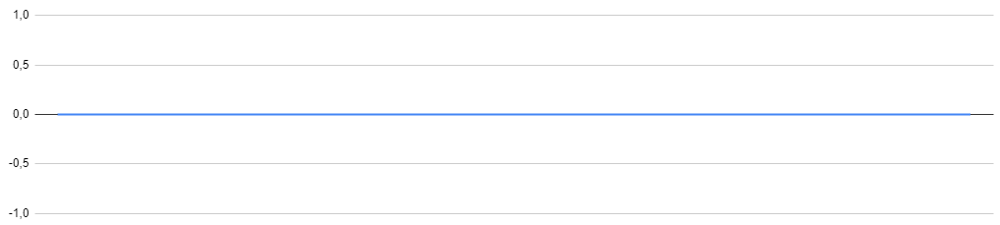

Formas de onda básicas
Existem 4 tipos de formas de onda básicas, como ilustrados aqui.
Senoidal
Ondas senoidais são parecidas com uma onda em um recipiente com água, movendo suavemente para cima e para baixo sem nenhum início ou final abrupto. Sons similares com uma onda senoidal incluem assobios, ar se movendo através da abertura de uma garrafa vazia e o toque de um diapasão. Ondas senoidais tem uma frequência e amplitude (também um deslocamento de fase, mas podemos ignorar por enquanto).


Ondas senoidais também podem ser adicionadas entre si para gerarem ondas diferentes. Se somarmos as duas ondas anteriores, o resultado é o seguinte.

Existe um caso interessante de soma de ondas senoidais: se tiverem a mesma frequência, mas amplitude invertida, o resultado será nulo. Isso é a ideia básica para cancelar sons indesejados.
Dente-de-Serra

Ondas dente-de-serra possuem um som forte e claro de zumbido. Uma onda Dente-de-Serra pode ser feita adicionando séries de ondas senoidais com diferentes frequências e volumes. A frequência da primeira e mais barulhenta onda senoidal é o que escutamos como a frequência da Dente-de-Serra resultante. Isso é chamado de frequência fundamental. Cada uma das outras ficam progressivamente mais quietas, ondas senoidais que fazem uma Dente-de-Serra são múltiplos integrais da frequência fundamental. Essas frequências são chamadas harmônicas.
Por exemplo, uma onda dente-de-serra ideal com uma frequência fundamental de 100Hz teria harmônicas em 200Hz, 300Hz, 400Hz e por ai em diante, com cada harmônica mais quieta que a última. Devido ao fato que a onda Dente-de-Serra possui cada integral harmônica da frequência fundamental, ela possui um som rico aos nossos ouvidos. A frequência fundamental define o tom do som, enquanto as harmônicas mudam o timbre do som sem afetar o tom.

Quadrangular

Assim como as ondas dente-de-serra, ondas quadrangulares podem ser geradas usando ondas senoidais com um volume decrescente. Entretanto, a onda quadrangular só possui harmônicas impares. Ondas quadrangulares podem ser encontradas no áudio de jogos antigos da Nintendo, que eram feitos quase que inteiramente de ondas quadrangulares.

Triangular
Ondas triangulares tem um som parecido com algo entre uma onda senoidal e uma onda quadrangular. E assim como as ondas quadrangulares, elas possuem apenas as harmônicas ímpares. Elas se diferem das ondas quadrangulares pois o volume de cada harmônica adicionada diminui mais rapidamente.